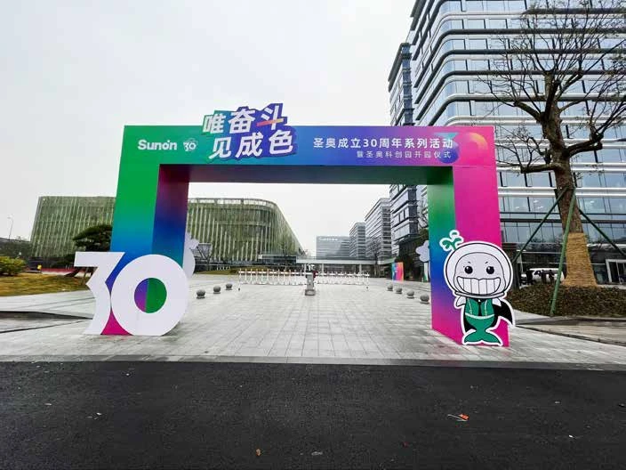
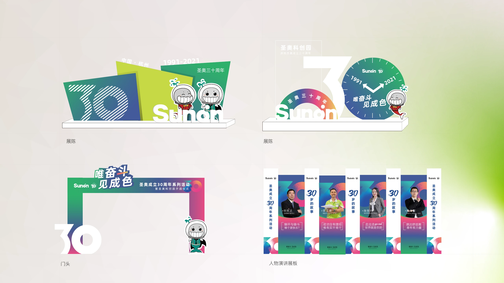
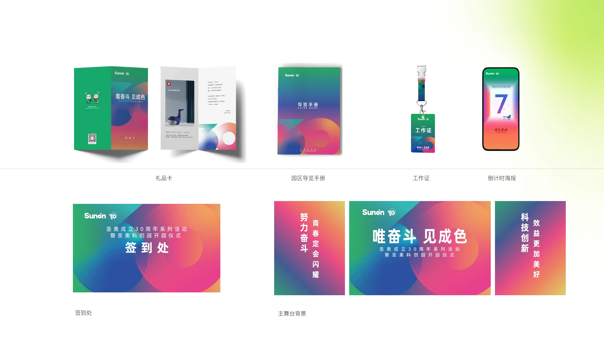

SUNON · 2021
30 周年品牌活动
贯穿线上线下的活动视觉
我的职责：活动平面视觉 · 跨媒介延展 · 制作落地
BRAND EVENT · 2021
一套活动视觉，
贯穿品牌的重要时刻。
圣奥成立 30 周年系列活动暨科创园开园仪式。我承担活动线上线下的平面视觉设计与落地，将活动表达延展至入口、舞台、展陈、导览和预热传播。



落地成果：活动视觉覆盖现场门头、主舞台、合影墙、人物与吉祥物展陈，并延展至园区导览手册、礼品卡、工作证和线上倒计时海报。
导览、活动物料与线上传播
